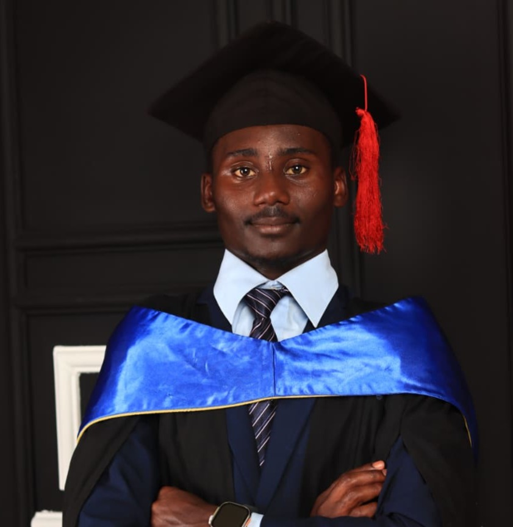

Linear & non-linear
Broadcast edits to Reels and TikToks.

Nelson Lewis Munene
Nelson Lewis Munene: UI/UX designer, full-stack developer and SEO specialist. Digital Marketer at GloboEdge Solutions, AI content creator, student pilot, author and coach.
 Coach
Coach Nelson
Nelson Pilot
Pilot Captain
CaptainInterfaces people enjoy using: web, social, motion and brand systems that look loud and work smoothly.
I design it and I build it: responsive front ends, WordPress/Elementor builds, Python, JavaScript and API integrations.
Getting websites found and loading fast. I've optimized sites for GloboEdge and for Dennis & Paul Co., an auditing firm.
Brand storytelling powered by Claude, OpenAI, DeepSeek, Higgsfield and Seedance, directed by a designer's eye.
Editing, website management and brand leadership.
Read the story → EducationFive Google-certified courses and a Mass Media degree.
See the certificates → AviationCockpit views, VFR rating and a PPL on the way.
Take off → WritingMeet Freefall and my book This Bird Is Crazy.
Start reading → SportsRollball, Baseball 5 and skating across Nairobi schools.
Meet the team → ContactLet's design, build and rank it.
Start a conversation →UI/UX designer with a Mass Media & Communication (IT option) degree from Mount Kenya University. I blend graphics, motion, 3D, SEO and web into interfaces that are beautiful, fast and easy to find.
Digital Marketer Globoedge branches: Lavington Mall & The Waterfront, Karen
B.A. Mass Media, second class upper
Broadcast edits to Reels and TikToks.
Scripts, articles and fiction.
Captain, coach and manager across rollball, inline skating and Baseball 5.
Apple Authorized Reseller · Nairobi
Schools across Nairobi
Faceless YouTube channel
Auditing firm
Television newsroom
Mount Kenya University ·Specialized in IT · Second class upper division
Mount Kenya University · AI in education and fundamentals of AI content creation.
Security mindset for building safer sites.
SEO, social and campaign strategy.
Scripting and automation.
Interactive, modern front ends.
Connecting services and live data.
freeCodeCamp
Premiere Pro, After Effects, Illustrator, InDesign, Blender
Proactive School of Aviation
I completed an AI short program at Mount Kenya University covering AI in education and the fundamentals of AI content creation. Since then I've built a stack of tools I use for writing, coding, imagery and video, and I combine them with a designer's eye so the final result never feels machine-made.
My go-to for prompt design, long-form writing, code and structured thinking, from website copy to captions and scripts.
ChatGPT and the OpenAI ecosystem for ideation, drafts, research and visual concepts.
A strong second brain for reasoning through problems and debugging code.
Cinematic, camera-controlled AI video for ads, reels and social content.
Text and image to video for motion-led storytelling and product visuals.
Fast image generation and editing for campaign visuals and thumbnails.
Multi-page WordPress/Elementor redesign with Apple product landing pages.
Managed and optimized the auditing firm's site.
Instagram and TikTok content across the Apple line.
From coffee varieties and seedlings to seed beds.
Faceless channel on tech, aviation and facts.
Selected graphic design work.
Student pilot working toward a Private Pilot Licence at Proactive School of Aviation. I love merging technology with flight, and it feeds my content and my fiction.
A science fiction story set in Kenya.
A student pilot, a Nairobi sky and a flight that changes everything. Open the book and read it page by page.
Start reading →
I lead GOA Rollball Club in the highest tier of the national league. Before that I captained the Mount Kenya University rollball team for 3 years.
Played first base for the MKU school team, competing in the national league.
I run and manage school sport programs, from skating clubs to inter-school competition.
Inline skating coach for schools that want a safe, fun and structured program.

A brand, a website, a story or a school skating program? Let's Talk.